1 · Choose one app
2 · Install it and open your folder
- On your laptop, go to antigravity.google/download. Download Antigravity and install it like any app.Windows 10 or 11, or macOS 13 or later.
- Sign in with a personal Google account. When it asks about your work, choose “Science”.
- Open “Settings”, then “Account”. Turn off “Enable Telemetry”.
- Make a new, empty folder, for example Documents › my-science-page. Put nothing private in it.
- Select “New Project”, then “Add Folder”. Choose your folder and select “Create”.
- Keep the permission mode on “Default”: the agent works freely inside the folder and asks before it goes outside. Never choose “Turbo”.
- Windows: install the ChatGPT desktop app from the Microsoft Store. Mac: install the ChatGPT desktop app for macOS from OpenAI.
- Sign in with your ChatGPT account. OpenAI says Codex is included on the Free plan.
- Choose Codex from the menu.
- Make a new, empty folder, for example Documents › my-science-page. Put nothing private in it. Then open it in Codex as a local folder.
- Use the “Ask for approval” mode. Never choose “Full access”.If the agent says it can only read, check the mode below the message box.
- You need a paid Claude plan (Pro, Max, Ultra, Team or Enterprise) or a Claude Console account.
- Open a terminal. Windows: open PowerShell and paste:
irm https://claude.ai/install.ps1 | iexMac: open Terminal and paste
curl -fsSL https://claude.ai/install.sh | bash - Open a new terminal and type claude --version. It should show a version number.
- Make a new, empty folder, for example Documents › my-science-page. In the terminal, go into it and start Claude Code:
cd Documents\my-science-page claudeThe first time, it asks you to log in. Follow the steps in your browser.
- Read every permission request before you allow it. Never turn the checks off for the whole computer.
3 · Give it your rules
- Type this to the agent. It saves your standing instructions in a rules file, which the agent reads before it works. Antigravity and Codex read AGENTS.md. Claude Code reads CLAUDE.md.
Create a file called AGENTS.md in this folder with these rules: - Write in simple English for 12-year-olds. - Make one index.html file with no internet links. - Ask before you delete or move a file. - List every fact on the page with its source.
4 · Make your first simulation
- Type your request. Say who it is for, what it shows, what learners do, and what they see.
Make index.html: a science simulation for 12-year-olds that shows why a hammer and a feather land together on the Moon. Let them drop both on Earth and on the Moon. Ask them to guess first. Then list every fact on the page with its source.
- Read each permission request before you choose Allow.
- Open your folder and double-click index.html. It opens in your browser.
- Ask for one change at a time. Check every number against a trusted source.
Desktop AI agent apps (no terminal needed)
These three apps work like normal programs: you click, you do not type commands. Each app works inside one folder on your computer. Choose one app. Make a new, empty folder for it, for example Documents › my-science-page. Put nothing private in it.
A · Antigravity app (Google)
A desktop app from Google. Its AI agents work inside a project: one or more folders that you choose.
Free or paid: free with a Google account. Google says people without a Google AI Pro or Ultra plan get “a meaningful quota, refreshed weekly” and “a weekly rate limit”. Google gives no numbers and says the limits can change.
- Go to antigravity.google/download. Under Antigravity App, choose Windows and select Download for x64.
Your computer needs Windows 10 (64-bit) or later. If your computer has an ARM processor, choose Download for ARM64. Mac: choose macOS, then Download for Apple Silicon or Download for Intel (macOS 13 Ventura or later).
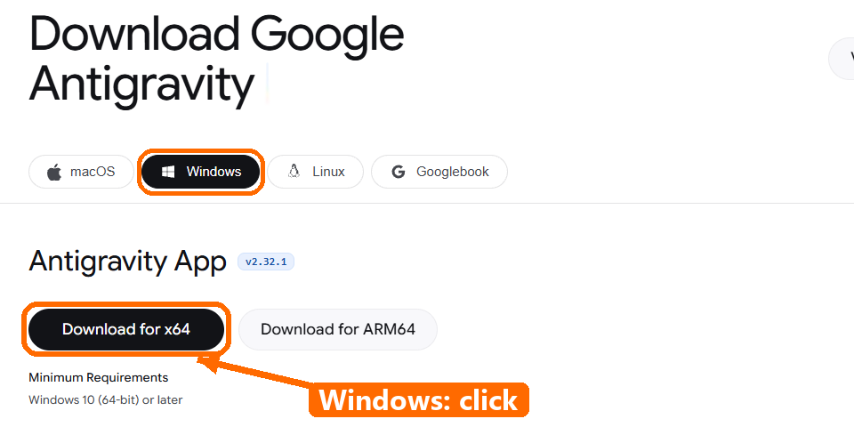
- Windows: run the downloaded .exe file and follow the setup steps. Mac: open Antigravity.dmg and drag Antigravity into your Applications folder.
- Open Antigravity and sign in with a personal Google account. The sign-in opens in your browser.
- The app asks what best describes your work. Choose Science, then Continue. Then confirm the Terms & Data Use notice.
Science gives you the simple “Knowledge Work” screen. It hides the Git, terminal and code-diff controls.
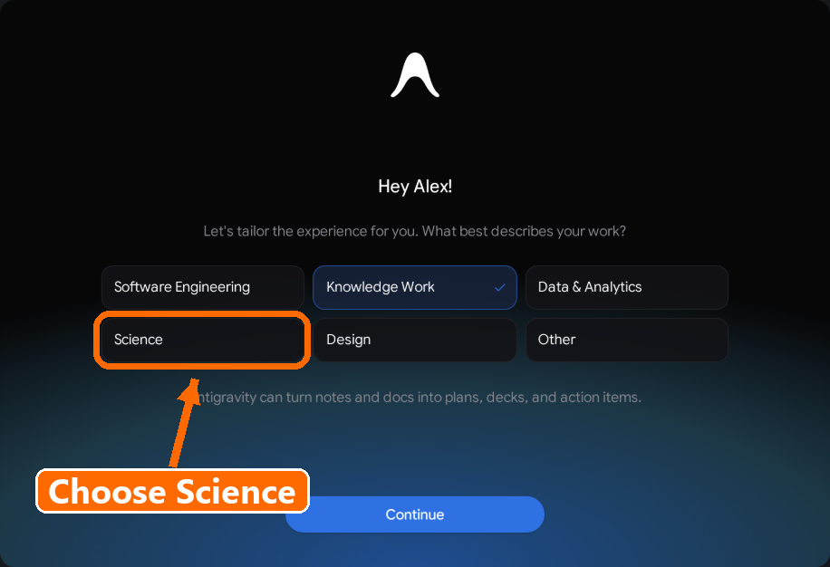
- Optional: click Settings at the bottom of the left sidebar. Under Account, turn off Enable Telemetry. When it is on, Google uses your interactions to improve Antigravity and its models.
- Open your folder: click the New Project icon (a folder with a plus sign) in the left sidebar. Click Add Folder, choose your folder, then click Create.
- Check the permission picker in the message box. Keep Default (“Ask before sensitive operations”). The agent reads and writes files in your folder without asking. It asks before it touches files outside the folder.
Never choose Turbo (“Run all commands without restrictions”). Turbo gives the agent your full computer. If the app's sandbox is not available, the app starts in Request Review instead: it asks before every command.
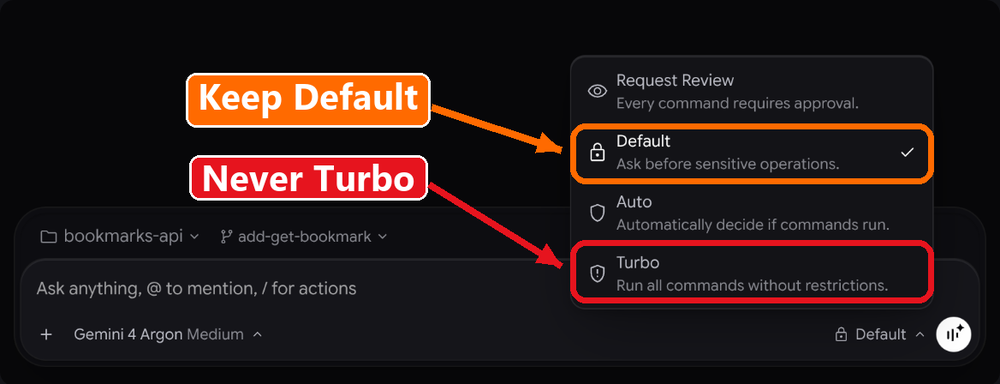
- Your rules file: Antigravity reads AGENTS.md (or GEMINI.md) in your project folder, and it is always active. Type this to the agent:
Create a file called AGENTS.md in this folder with these rules: - Write in simple English for 12-year-olds. - Ask before you delete or move a file. - List every fact on the page with its source.
B · ChatGPT desktop app, Codex view (OpenAI)
The ChatGPT app for your computer. Its Codex view is an AI agent that can work with a folder on your computer.
Free or paid: OpenAI says: “Codex is included across ChatGPT plans, including Free and Go. Usage limits vary by plan.” No numbers are given.
- Windows: install the ChatGPT desktop app from the Microsoft Store. OpenAI's download page, chatgpt.com/download, has a Download for Windows button. Mac: on OpenAI's quickstart page, open the Download ChatGPT menu and choose macOS (Apple silicon) or macOS (Intel).
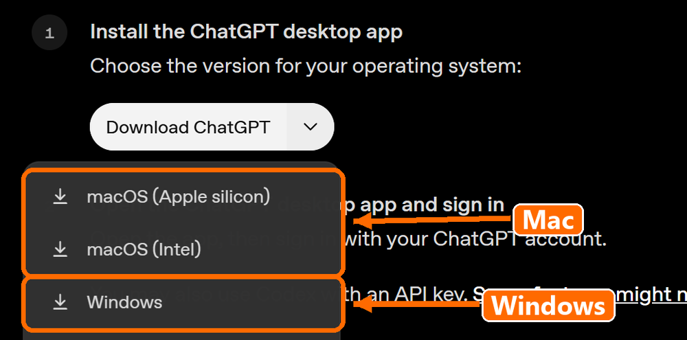
- Open the app and sign in with your ChatGPT account.
- Select Codex from the ChatGPT menu at the top.
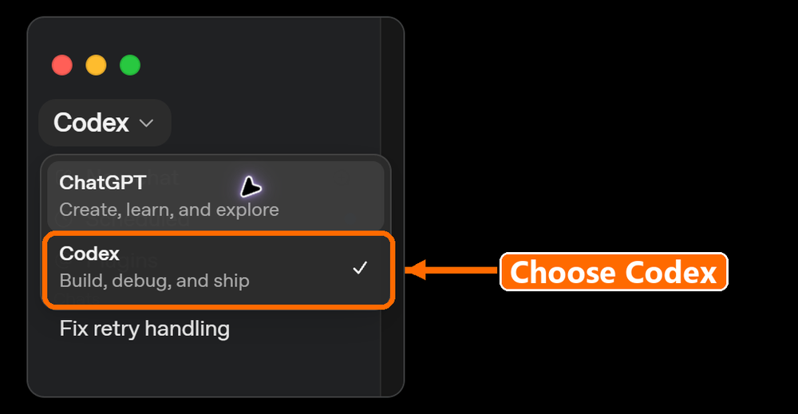
- Open your folder as a project. On Windows, click Add new project or press Ctrl+O, then choose your folder. ChatGPT can read and change the files in the folder you choose.
- Open the permissions control below the message box. Choose Ask for approval before you send your first message. Codex can then read and edit files in your folder. It asks before it uses the internet or goes outside the folder.
Never choose Full access (“Unrestricted access to the internet and any file on your computer”). OpenAI warns that Codex could then do things by mistake that “can lead to data loss”.
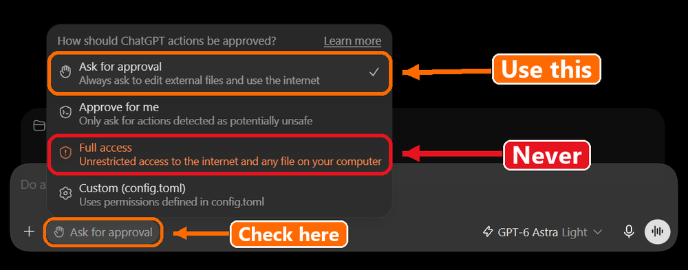
If Codex says it can only read, this is normal for a new folder. OpenAI says a folder without Git can start as read-only until you trust it. Check the mode again. - Your rules file: Codex reads AGENTS.md “before doing any work”. Type this to Codex:
Create a file called AGENTS.md in this folder with these rules: - Write in simple English for 12-year-olds. - Ask before you delete or move a file. - List every fact on the page with its source.
C · Claude Desktop (Anthropic): Code tab and Cowork
The Claude app for your computer. The Code tab gives you Claude Code with buttons instead of a terminal. Cowork does multi-step tasks with your documents and files.
Paid plan needed. The Claude app itself is free, but Claude Code needs a Pro, Max, Ultra, Team or Enterprise plan. Cowork is also for paid plans only.
- Go to claude.ai/download. In the Desktop box, select Download next to macOS or Windows.
There is also a Windows (arm 64) download and a Microsoft Store button.
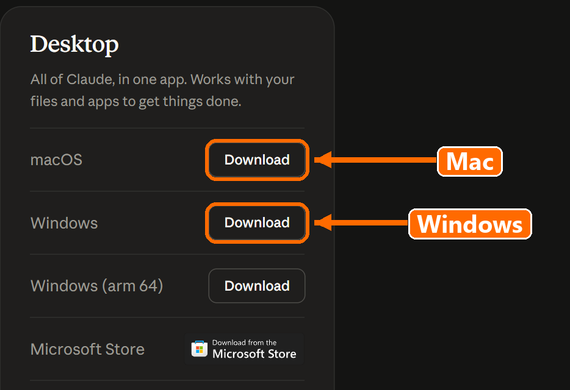
- Run the installer. Open Claude from the Start menu (Windows) or the Applications folder (Mac). Sign in with your Anthropic account.
- Click the Code tab at the top of the sidebar. If you see a prompt to upgrade, you need a paid plan first.
- Open your folder. In the row under the prompt box, click the first control (the environment) and choose the top item under Local. Then click the folder control next to it, select Open folder..., and choose your folder.
- In the same row, open the mode selector. Choose Manual: Claude asks before it edits files or runs commands, and you can accept or reject each change. Check the mode before your first message.
Never choose Bypass permissions. Anthropic says: “Only use this in sandboxed containers or VMs.”
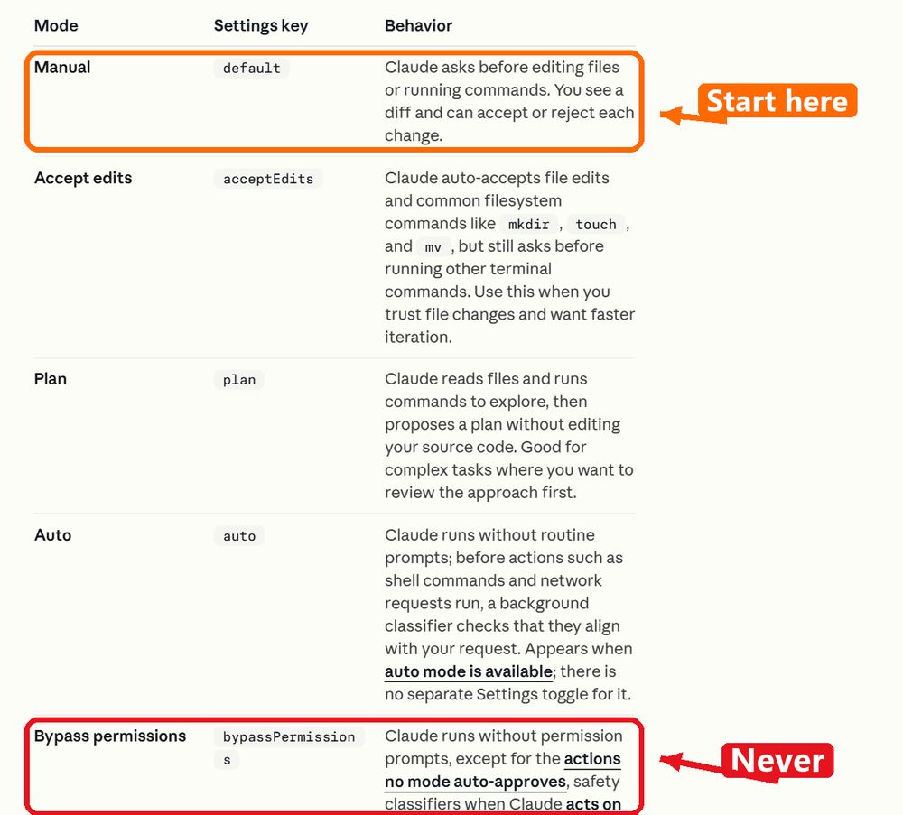
- Your rules file: Claude reads CLAUDE.md in your folder at the start of every session. Type this to Claude:
Create a file called CLAUDE.md in this folder with these rules: - Write in simple English for 12-year-olds. - Ask before you delete or move a file. - List every fact on the page with its source.Claude reads AGENTS.md only when there is no CLAUDE.md.
Cowork (for documents, not code): in the message box, select Cowork. If you do not see “Chat” and “Cowork”, every conversation can already do Cowork tasks. Claude can only read and write files in the folders you connect, so connect only your new folder. Choose Manual (“Manually approve”) in the mode selector: Claude asks before each action. Never choose Skip (“Skip all approvals”): then nothing checks Claude's actions. Instead of a rules file, Cowork uses folder instructions when you select a local folder. Cowork always asks before it deletes a file for ever. Cowork tasks run on Anthropic's servers, not on your computer.
Sources (pages read 16 November 2026): Google: antigravity.google/download; Antigravity docs: Get started, Settings, Permissions, Rules, Plans. OpenAI: chatgpt.com/download; ChatGPT Learn: Quickstart, Permissions, ChatGPT desktop app for Windows, Agent approvals and security, AGENTS.md; OpenAI Help Center: Codex in ChatGPT plans (article 11369540), ChatGPT Work and Codex. Anthropic: claude.com/download; Claude Code docs: Get started with the desktop app, Desktop application, Memory (CLAUDE.md); Claude Help Center: Get started with Claude Cowork. Screens change: if a button has moved, look for the same words nearby.
Run an AI agent in the terminal: Claude Code
Claude Code is an AI agent from Anthropic. It works inside a terminal, in one folder on your computer.
Before you start: you need a paid Claude plan (Pro, Max, Ultra, Team or Enterprise) or a Claude Console account. The free Claude plan does not include Claude Code. Your computer needs Windows 10 (version 1809 or later) or macOS 13 or later. Kuwait is on Anthropic’s list of supported countries.
- Open a terminal. A terminal is a window where you type commands instead of clicking. It shows a blinking cursor.
Windows: press Win + X and choose Windows PowerShell (or Terminal). Each line starts with PS C:\Users\YourName>. If you do not see PS, you are in CMD, not PowerShell.Mac: press Cmd + Space, type Terminal and press Return. Or open Finder › Applications › Utilities and double-click Terminal.You cannot click inside the terminal. Use the keyboard and the arrow keys.
- Install Git.
Windows: go to git-scm.com/downloads/win and select “Click here to download”. Run the installer. Click Next on each screen and keep the default choices. At “Adjusting your PATH environment”, keep the recommended option.
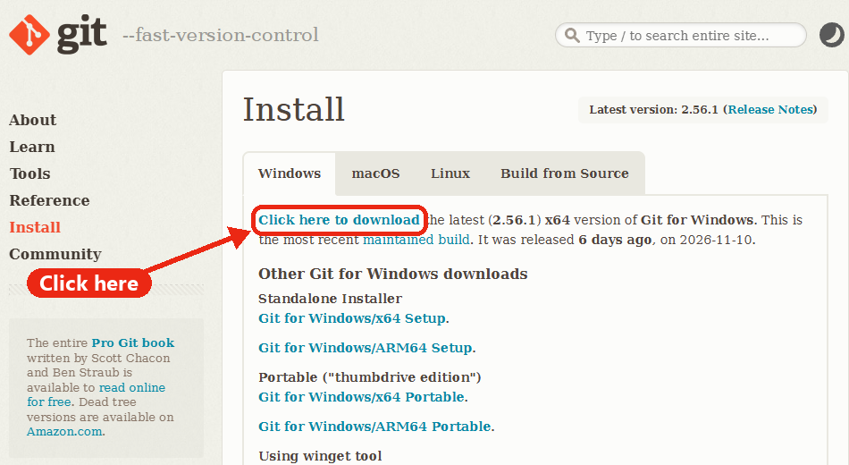
Mac: type the command below. If Git is not installed, your Mac asks to install it (Apple’s Xcode Command Line Tools). Follow the message.Check Git. Type this and press Enter:git --version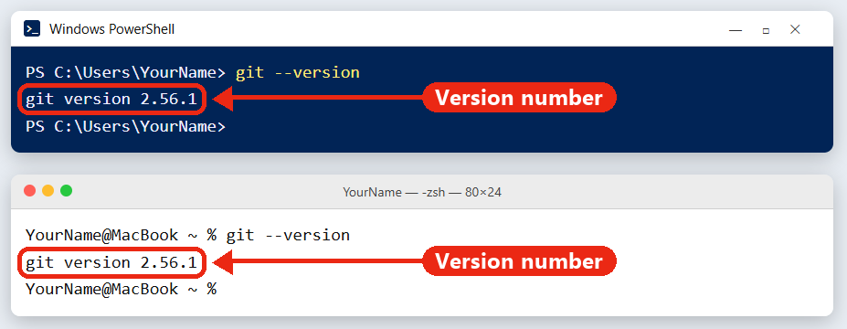
Example picture. Your version number may be different. Anthropic says Git for Windows is optional but recommended. Without it, Claude Code uses PowerShell instead. You do not need to learn Git. - Install Claude Code. Copy the line for your computer, paste it into the terminal and press Enter.
Windows (PowerShell):irm https://claude.ai/install.ps1 | iexMac (Terminal):curl -fsSL https://claude.ai/install.sh | bash
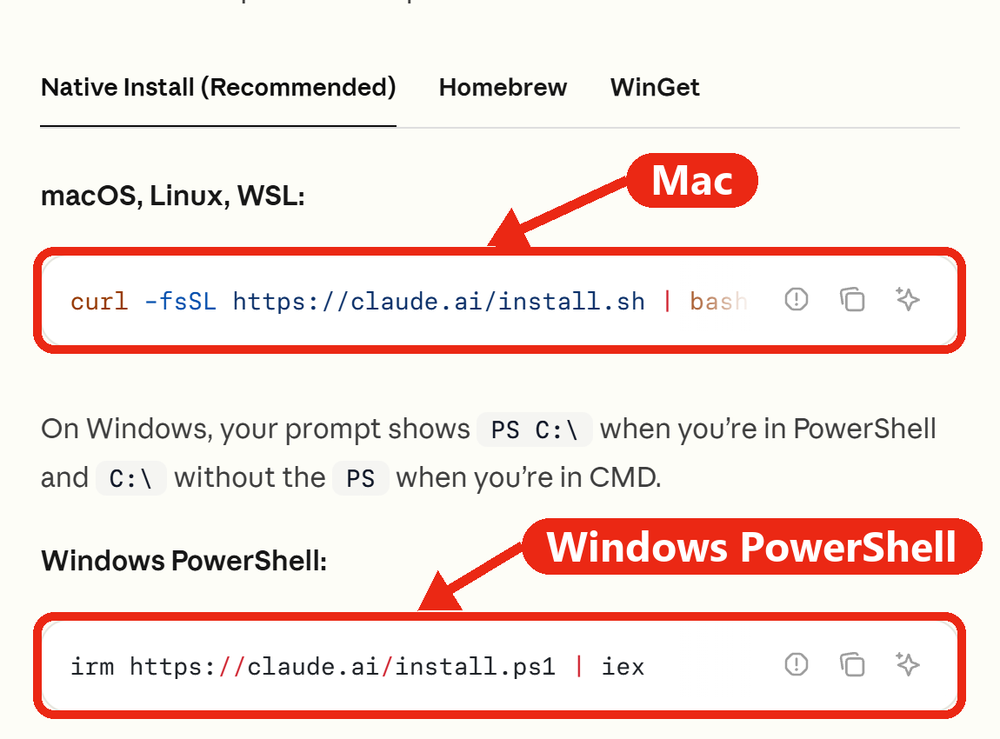
The command shows no progress while it downloads. Leave the window open and wait. At the end you see “Claude Code successfully installed!”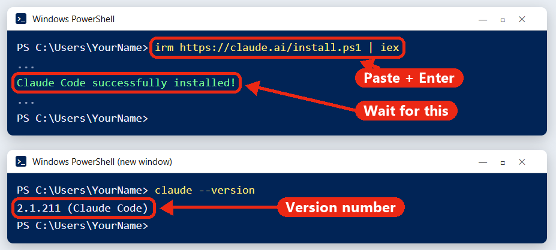
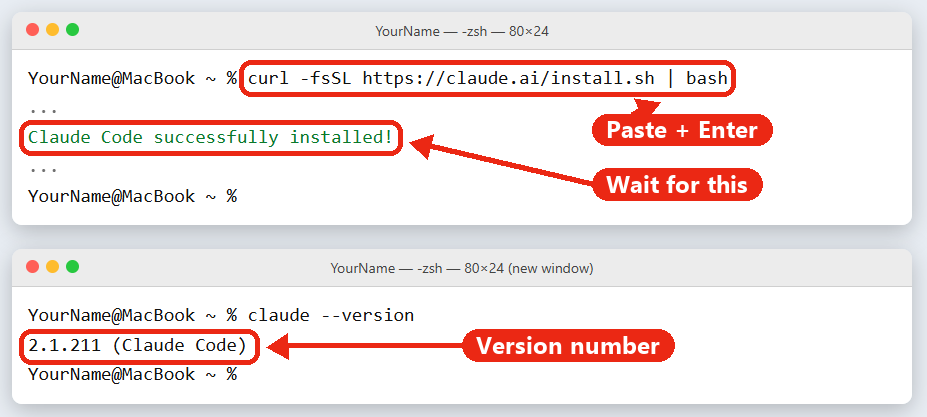
Example pictures. Your screen shows more lines. “irm is not recognized” means you are in CMD, not PowerShell. Open PowerShell and try again. - Check it works. Open a new terminal window and type:
claude --versionYou should see a version number followed by “(Claude Code)”. If it says “not recognized” or “command not found”, follow the fix in Anthropic’s terminal guide, then open a new window and try again.
- Make a project folder and start Claude Code. Type each line and press Enter after each one. It is the same on Windows and Mac.
mkdir my-science-page cd my-science-page claude
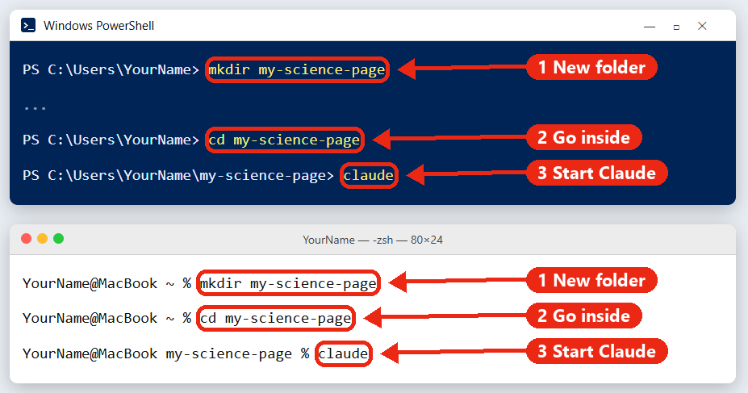
Example picture. mkdir makes a new folder. cd goes into it. The folder is inside your user folder. Put nothing private in it. - Log in the first time. Claude Code asks you to log in. A browser window opens. Sign in with your Claude account and follow the steps. Claude Code saves your login, so you do this only once. To change account later, type /login inside Claude Code.
- Know the first commands. Type your request in plain English and press Enter. These help too:
/help – show the commands/init – make a starting rules file (CLAUDE.md)/clear – start a new conversationEsc – stop Claude while it is working/exit or Ctrl + D twice – leave Claude Codeclaude -c (in the terminal) – continue your last conversation in this folder
- Read every permission request. A request shows what Claude wants to do, then your choices. Read the action first. Choose with the arrow keys and Enter, or press Esc to cancel.
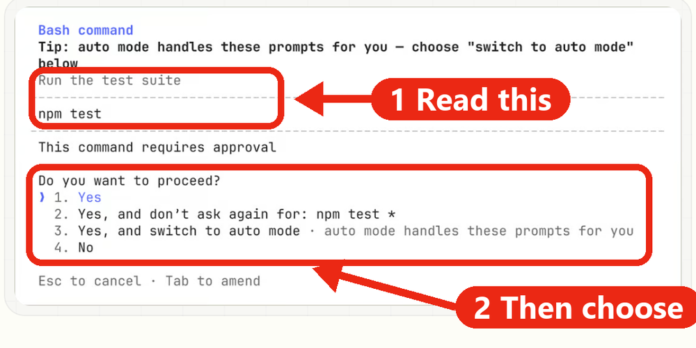
Yes allows it once. Yes, and don’t ask again stops Claude asking about the same action. For a command, this is saved for later sessions in this folder too. No stops it. New versions start in auto mode: a second AI model checks actions for you, so you see fewer requests. To check every action yourself, press Shift + Tab once. The bottom line then says manual mode on. Never start Claude with --dangerously-skip-permissions. Anthropic says to use it only in isolated containers and virtual machines. - Give it your rules in CLAUDE.md. CLAUDE.md is a plain text file in your project folder. Claude reads it at the start of every session. Type /init to make a first version, or ask Claude:
Create a file called CLAUDE.md in this folder with these rules: - Write in simple English for 12-year-olds. - Ask before you delete or move a file. - List every fact on the page with its source.Keep the rules short and clear. Anthropic suggests under 200 lines. Claude treats them as guidance, so still read every permission request.
Sources, read 16 November 2026: Anthropic, Claude Code docs: Quickstart, Terminal guide for new users, Advanced setup, Configure permissions, Choose a permission mode, How Claude remembers your project; Anthropic, Supported Regions Policy; git-scm.com: Install for Windows, Install for macOS, Pro Git “1.5 Installing Git”; Apple: Terminal User Guide “Open or quit Terminal on Mac”, Command Line Primer; Microsoft Learn: Set-Location, Using aliases, Set up Node.js on native Windows. Pictures marked “example” are mock-ups, not real screenshots.
More apps: VS Code with GitHub Copilot, and Codex CLI
These two apps also work in one folder on your laptop. VS Code is an editor with buttons. Codex CLI runs in a terminal: a window where you type commands.
A · VS Code with GitHub Copilot
- Go to code.visualstudio.com/download. Select Windows and install VS Code like any app.VS Code needs Windows 10 or 11 (64-bit), or macOS 12.0 or later.
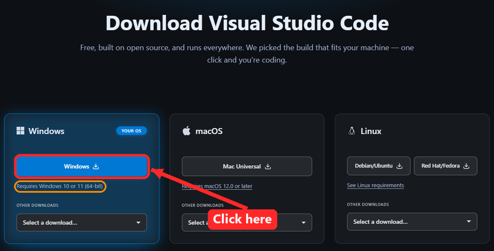
- Open VS Code. Move the mouse over the Copilot icon in the Status Bar (the bar at the bottom) and select “Use AI Features”. Sign in with your GitHub account and follow the steps.If you have no Copilot plan, VS Code signs you up for Copilot Free.
- Know what “free” means. GitHub's plans page says Copilot Free has “limited access to a selection of Copilot features”, an allowance of AI credits, “Auto model selection only”, and agents marked “Limited”. It gives no number for agent use. Inline suggestions are “Limited to 2000 completions per month”.
To see how much you used, open the Copilot status dashboard from the Status Bar. Copilot Free is only for people who do not already get Copilot through an organization. GitHub also says verified teachers “may be eligible for free access to Copilot Pro”.

- Telemetry is on in Copilot Free. To turn it off, open VS Code Settings and set telemetry.telemetryLevel to off. You can also change it in your Copilot settings on github.com.
- Make a new, empty folder, for example Documents › my-science-page. Put nothing private in it. In VS Code select File › Open Folder and open it.If VS Code asks whether you trust the folder, select “Manage”, then “Trust”. Trust only your own new folder. For a folder from someone else, keep restricted mode: it turns the agent off.
- Press Ctrl+Alt+I to open the Chat view. Select + to start a new chat. Below the message box choose Copilot, Agent, Auto and Manual permissions.
 Example picture (a mock-up, not a real screen).
Example picture (a mock-up, not a real screen). - Keep “Manual permissions”. It is the default: the agent can edit files in your folder, and it asks before it runs tools or uses other resources. Read each request before you choose “Allow Once”. Never choose “Allow all” or “Autopilot”, never type /yolo, and never turn on the setting chat.tools.global.autoApprove. VS Code warns that these skip confirmation “for potentially destructive actions”.
- Your rules file: Copilot reads AGENTS.md (or .github/copilot-instructions.md) in your folder. Use the AGENTS.md prompt in step 3 of this guide.Rules guide the AI, but they do not lock anything. VS Code says: “Instructions guide the model and are not an enforcement boundary.”
VS Code says file contents, terminal output and diagnostic information from your folder “are sent as context to language models and tools”. Keep personal data out of the folder.
B · Codex CLI (OpenAI)
Codex CLI is OpenAI's coding agent for the terminal. It can read files, edit them and run commands in your folder. You sign in with your ChatGPT account.
- Windows: open a new PowerShell window and paste OpenAI's install command:
powershell -ExecutionPolicy ByPass -c "irm https://chatgpt.com/codex/install.ps1 | iex"Mac: open Terminal and paste
curl -fsSL https://chatgpt.com/codex/install.sh | sh. The same page also lists an npm command; you do not need it. On Windows, OpenAI says to use the normal Windows way by default; WSL (Linux inside Windows) is only for people who need Linux tools. OpenAI recommends Windows 11; Windows 10 (version 1809 or newer) is “best effort”.
- Open a new PowerShell window. Go into your folder and start Codex:
cd Documents\my-science-page codexThe first time, choose “Sign in with ChatGPT”. A browser window opens: sign in there. OpenAI’s help page says Codex is included on Free and Go, but its pricing page lists the CLI only from Plus. If the CLI does not work on a free account, use the ChatGPT desktop app instead.
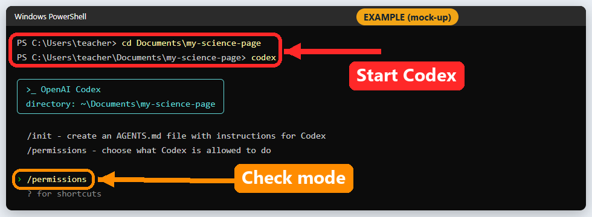
Example picture (a mock-up, not a real screen). - Type /permissions to see and change the mode. Choose “Ask for approval”: OpenAI says “For most work, start with Ask for approval.” Codex then works inside your folder and asks before it edits files outside it or uses the internet. Never choose “Full access”, and never start Codex with --yolo or --dangerously-bypass-approvals-and-sandbox. OpenAI: full access “might perform unintentional destructive actions that can lead to data loss.” A new folder that is not a Git folder may start read-only: Codex can read but not write. Then use /permissions to let it work in the folder.
- Your rules file: Codex reads AGENTS.md “before doing any work”. Use the AGENTS.md prompt in step 3 of this guide, or type /init to make one.
C · Compare
| App | Needs a terminal? | Free? | Rules file |
|---|---|---|---|
| VS Code + GitHub Copilot | No. You click buttons. The agent can run commands for you after you allow them. | Yes: Copilot Free, with limits (agents “Limited”) | AGENTS.md or .github/copilot-instructions.md |
| Codex CLI | Yes: PowerShell on Windows, Terminal on Mac | Not sure: OpenAI’s pages disagree; the pricing page lists the CLI from Plus | AGENTS.md |
Sources (pages read 16 November 2026): Microsoft, code.visualstudio.com: Download, Set up GitHub Copilot in VS Code, Quickstart: Complete your first task with an agent, Manage approvals and permissions, Secure AI-assisted development, Use custom instructions, Custom instructions reference. GitHub Docs: Plans for GitHub Copilot. OpenAI, learn.chatgpt.com: Codex CLI, Authentication, Permissions, Agent approvals & security, Windows sandbox, WSL, Custom instructions with AGENTS.md; OpenAI Help Center: Using Codex with your ChatGPT plan. Screens change: if a button has moved, look for the same words nearby.
Before you start
Never put personal data in the folder or in a prompt: no student names, phone numbers, civil ID numbers or passwords. The files the agent reads are sent to the AI company.
Tips and tricks for working with AI · Only want a chat in your browser? Open an AI chat, step by step.